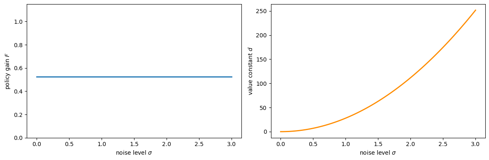
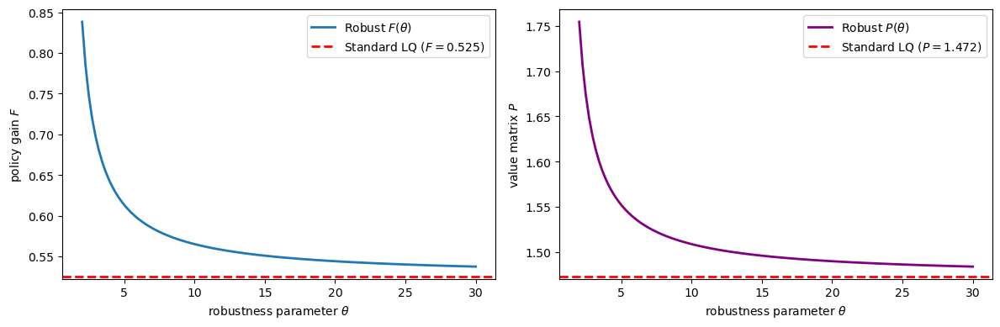
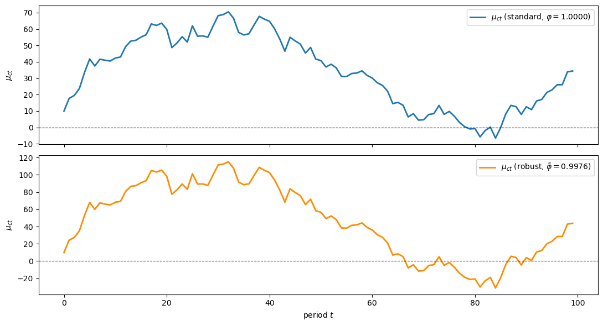
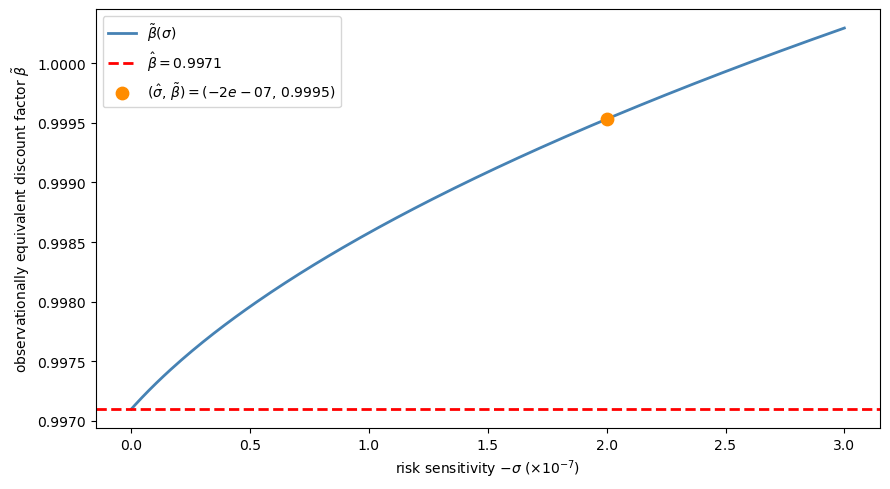
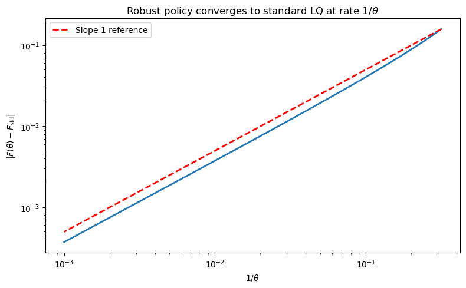

76. Certainty Equivalence and Model Uncertainty#
76.1. Overview#
This is a sequel to this lecture on certainty equivalence that established an important certainty equivalence (CE) property for linear-quadratic (LQ) dynamic programming problems.
The property justifies a two-step algorithm for computing optimal decision rules:
Optimize under perfect foresight (treat future exogenous variables as known).
Forecast — substitute optimal forecasts for the unknown future values.
This lecture extends the certainty equivalence property in two directions motivated by [Hansen and Sargent, 2004]:
Model uncertainty and robustness. What happens when the decision maker does not trust his model? A remarkable version of CE survives, but now the “forecasting” step uses a distorted probability distribution that the decision maker deliberately tilts against himself in order to achieve robustness.
Risk-sensitive preferences. A mathematically equivalent reformulation interprets the same decision rules through recursive risk-sensitive preferences.
The robustness parameter \(\theta\) and the risk-sensitivity parameter \(\sigma\) are linked by \(\theta = -\sigma^{-1}\).
We illustrate all three settings — ordinary CE, robust CE, and the permanent income
application — with Python code using quantecon.
76.1.1. Model features#
Linear transition laws and quadratic objectives (LQ framework).
Ordinary CE: optimal policy independent of noise variance.
Robust CE: distorted forecasts replace baseline model forecasts; policy function depends on \(\theta\).
Permanent income application: Hall’s martingale, precautionary savings under robustness, and observational equivalence between robustness and patience.
This lecture draws on [Hansen and Sargent, 2004] and [Hansen and Sargent, 2008].
In addition to what’s in Anaconda, this lecture will need the following libraries:
!pip install quantecon
We use the following imports:
import numpy as np
import matplotlib.pyplot as plt
from quantecon import LQ, RBLQ
76.2. Recap: ordinary certainty equivalence#
The companion lecture established the CE property in detail.
Here we collect only the elements needed for the robustness extension below.
The state vector \(y_t = \begin{bmatrix} x_t \\ z_t \end{bmatrix}\) has an exogenous component \(z_t\) with transition law
and an endogenous component \(x_t\) obeying
Under the LQ assumption (quadratic return \(r(y,u) = -y^\top Qy - u^\top Ru\), linear \(f\) and \(g\), Gaussian shocks), the optimal decision rule \(h\) decomposes as \(u_t = h_1(x_t,\, h_2 \cdot z_t)\) where \(h_1\) solves a nonstochastic control problem and \(h_2\) solves an optimal forecasting problem.
The optimal value function is \(V(y_0) = -y_0^\top P\, y_0 - p\) where, writing \(z_{t+1} = f_1 z_t + f_2 \epsilon_{t+1}\):
\(P\) is the fixed point of an operator \(T(P; r, g, f_1)\) that does not involve the volatility matrix \(f_2\), so neither \(P\) nor the decision rule \(h\) depends on the noise loadings.
The constant \(p = \beta/(1-\beta)\,\mathrm{tr}(f_2^\top P f_2)\) grows with volatility.
Uncertainty lowers the value (larger \(p\)) but does not alter behaviour.
The following code sets up a scalar LQ problem and confirms that the policy gain \(F\) is invariant to the noise level \(\sigma\) while \(d\) grows with it.
a, b_coeff = 0.9, 1.0
q, r = 1.0, 1.0
β = 0.95
A = np.array([[a]])
B = np.array([[b_coeff]])
Q_mat = np.array([[q]]) # state cost
R_mat = np.array([[r]]) # control cost
σ_vals = np.linspace(0.0, 3.0, 80)
F_vals, d_vals = [], []
for σ in σ_vals:
C = np.array([[σ]])
lq = LQ(R_mat, Q_mat, A, B, C=C, beta=β)
P, F, d = lq.stationary_values()
F_vals.append(float(F[0, 0]))
d_vals.append(float(d))
fig, axes = plt.subplots(1, 2, figsize=(12, 4))
axes[0].plot(σ_vals, F_vals, lw=2)
axes[0].set_xlabel('noise level $\\sigma$')
axes[0].set_ylabel('policy gain $F$')
axes[0].set_ylim(0, 2 * max(F_vals) + 0.1)
axes[1].plot(σ_vals, d_vals, lw=2, color='darkorange')
axes[1].set_xlabel('noise level $\\sigma$')
axes[1].set_ylabel('value constant $d$')
plt.tight_layout()
plt.show()

Fig. 76.1 CE principle — policy vs. value#
76.3. Model uncertainty and robustness#
76.3.1. Setup and the multiplier problem#
The decision maker in Simon and Theil’s setting knows his model exactly — he has no doubt about the transition law (76.1).
Now suppose he suspects that the true data-generating process is
where \(w_{t+1} = \omega_t(x^t, z^t)\) is a misspecification term chosen by an adversarial “nature.”
The decision maker believes his approximating model is a good approximation in the sense that
where \(\eta_0\) parametrises the tolerated misspecification budget and \(\hat{\mathbb{E}}\) is the expectation under the distorted law (76.3).
To construct a robust decision rule the decision maker solves the multiplier problem — a two-player zero-sum dynamic game:
where \(\theta > 0\) penalises large distortions.
A larger \(\theta\) shrinks the feasible misspecification set; as \(\theta \to \infty\) the problem reduces to ordinary LQ.
The Markov perfect equilibrium of (76.5) delivers a robust rule \(u_t = h(x_t, z_t)\) together with a worst-case distortion process \(w_{t+1} = W(x_t, z_t)\).
76.3.2. Stackelberg timing and the modified CE#
The Markov perfect equilibrium conceals a form of CE.
To reveal it, Hansen and Sargent [2001] impose a Stackelberg timing protocol: at time 0, the minimising player commits once and for all to a plan \(\{w_{t+1}\}\), after which the maximising player chooses \(u_t\) sequentially.
This makes the minimiser the Stackelberg leader.
To describe the leader’s committed plan, introduce “big-letter” state variables \((X_t, Z_t)\) (same dimensions as \((x_t, z_t)\)) that encode the leader’s pre-committed strategy:
Summarised with \(Y_t = \begin{bmatrix} X_t \\ Z_t \end{bmatrix}\):
The maximising player then faces an ordinary dynamic programming problem subject to his own dynamics (76.2), the distorted \(z\)-law (76.3), and the exogenous process (76.7).
His optimal rule takes the form
Başar and Bernhard [2008] and Hansen and Sargent [2008] establish that at equilibrium (with “big \(K\) = little \(k\)” imposed) this collapses to
the same rule as the Markov perfect equilibrium of (76.5).
76.3.3. Modified separation principle#
The Stackelberg timing permits an Euler-equation approach.
The two-step algorithm becomes:
The first step is unchanged: solve the same nonstochastic control problem as before, with \(\mathbf{z}_t = (z_t, z_{t+1}, \ldots)\) treated as known, giving \(u_t = h_1(x_t, \mathbf{z}_t)\).
The second step is modified: form forecasts using the distorted law of motion (76.7). By the linearity and Gaussianity of the system,
where \(\hat{\mathbb{E}}\) uses the distorted model.
Substituting (76.10) into \(h_1\) and imposing \(Y_t = y_t\) gives the robust rule
This is the modified CE: step 1 is identical to the non-robust case; only step 2 changes, using distorted rather than rational forecasts.
In contrast to ordinary CE, the robust policy does change as \(\theta\) varies.
As \(\theta \to \infty\) (no robustness) the robust policy converges to the standard LQ policy.
σ_fixed = 1.0
C_fixed = np.array([[σ_fixed]])
lq_std = LQ(R_mat, Q_mat, A, B, C=C_fixed, beta=β)
P_std, F_std_arr, d_std = lq_std.stationary_values()
F_standard = float(F_std_arr[0, 0])
P_standard = float(P_std[0, 0])
θ_vals = np.linspace(2.0, 30.0, 120) # restrict attention to a numerically stable range
F_rob_vals, P_rob_vals = [], []
for θ in θ_vals:
rblq = RBLQ(R_mat, Q_mat, A, B, C_fixed, β, θ)
F_rob, K_rob, P_rob = rblq.robust_rule()
F_rob_vals.append(float(F_rob[0, 0]))
P_rob_vals.append(float(P_rob[0, 0]))
fig, axes = plt.subplots(1, 2, figsize=(12, 4))
axes[0].plot(θ_vals, F_rob_vals, lw=2, label='Robust $F(\\theta)$')
axes[0].axhline(F_standard, color='r', linestyle='--', lw=2,
label=f'Standard LQ ($F = {F_standard:.3f}$)')
axes[0].set_xlabel('robustness parameter $\\theta$')
axes[0].set_ylabel('policy gain $F$')
axes[0].legend()
axes[1].plot(θ_vals, P_rob_vals, lw=2, color='purple',
label='Robust $P(\\theta)$')
axes[1].axhline(P_standard, color='r', linestyle='--', lw=2,
label=f'Standard LQ ($P = {P_standard:.3f}$)')
axes[1].set_xlabel('robustness parameter $\\theta$')
axes[1].set_ylabel('value matrix $P$')
axes[1].legend()
plt.tight_layout()
plt.show()

Fig. 76.2 Robust policy varies with θ#
Observe that for small \(\theta\) (strong preference for robustness) both \(F\) and \(P\) deviate substantially from their non-robust counterparts, converging to the standard values as \(\theta \to \infty\).
This contrasts sharply with ordinary CE: under robustness, both the policy gain and the value matrix depend on the robustness parameter \(\theta\) and the noise-loading matrix \(C\).
76.4. Value function under robustness#
Under a preference for robustness, the optimised value of (76.5) is again quadratic,
but now both \(P\) and \(p\) depend on the volatility parameter \(f_2\).
Specifically, \(P\) is the fixed point of the composite operator \(T \circ \mathcal{D}\) where \(T\) is the same Bellman operator as in the non-robust case and \(\mathcal{D}\) is the distortion operator:
Given the fixed point \(P = T(\mathcal{D}(P))\), the constant is
Despite \(P\) now depending on \(f_2\), a form of CE still prevails: the same decision rule (76.11) also emerges from the nonstochastic game that maximises (76.5) subject to (76.2) and
i.e., setting \(\epsilon_{t+1} \equiv 0\).
The presence of randomness lowers the value (the constant \(p\)) but does not change the decision rule.
76.5. Risk-sensitive preferences#
Building on Jacobson [1973] and Whittle [1990], Hansen and Sargent [2004] showed that the same decision rules can be reinterpreted through risk-sensitive preferences.
Suppose the decision maker fully trusts his model
but evaluates stochastic processes according to the recursion
where the risk-adjusted continuation operator is
When \(\sigma = 0\), L’Hôpital’s rule recovers the standard expectation operator.
When \(\sigma < 0\), \(\mathcal{R}_t\) penalises right-tail risk in the continuation utility \(U_{t+1}\).
For a candidate quadratic continuation value \(U_{t+1}^e = -y_{t+1}^\top \Omega\, y_{t+1} - \rho\), let \(\hat{y}_{t+1} \equiv A y_t + B u_t\) denote the conditional mean of \(y_{t+1}\).
Evaluating \(\mathcal{R}_t\) via the log-moment-generating function of the Gaussian distribution yields
where \(\mathcal{D}\) is the same distortion operator as in (76.13) with \(\theta = -\sigma^{-1}\), and \(\hat{\rho}\) is the corresponding scalar adjustment term.
Consequently, the risk-sensitive Bellman equation has the same fixed point \(P\) as the robust control problem, and therefore the same decision rule \(u_t = -F y_t\).
Key equivalence: robust control with parameter \(\theta\) and risk-sensitive control with parameter \(\sigma = -\theta^{-1}\) produce identical decision rules.
76.6. Application: permanent income model#
We now illustrate all of the above in a concrete linear-quadratic permanent income model.
76.6.1. Model setup#
A consumer receives an exogenous endowment process \(\{z_t\}\) and allocates it between consumption \(c_t\) and savings \(x_t\) to maximise
where \(b\) is a bliss level of consumption.
Defining the marginal utility of consumption \(\mu_{ct} \equiv b - c_t\) (the control), the budget constraint and endowment process are
where \(R > 1\) is the gross return on savings, \(|\rho| < 1\), and \(w_{t+1}\) is an optional shock-mean distortion representing model misspecification.
After absorbing the constants \(-b\) and \(\mu_d(1-\rho)\) by augmenting the state vector, or equivalently by working with deviations from steady state, setting \(w_{t+1} \equiv 0\) and taking \(Q = 0\) (return depends only on the control \(\mu_{ct}\)) and \(R_{\text{ctrl}} = 1\) puts this in the standard LQ form
In the numerical code below we add a negligible 1e-8 I regularisation to the
state-cost matrix to keep the Riccati computation well conditioned in Hall’s
unit-root case \(\beta R = 1\).
We calibrate to parameters estimated by Hansen et al. [1999] from post-WWII U.S. data:
β_hat = 0.9971
R_rate = 1.0 / β_hat # β*R = 1 (Hall's case)
ρ = 0.9992
c_d = 5.5819
σ_rs = -2e-7 # σ_hat < 0
θ_pi = -1.0 / σ_rs # θ = -1/σ_hat
A_pi = np.array([[R_rate, 1.0],
[0.0, ρ]])
B_pi = np.array([[1.0],
[0.0]])
C_pi = np.array([[0.0],
[c_d]])
Q_pi = 1e-8 * np.eye(2) # regularise for β*R = 1
R_pi = np.array([[1.0]])
76.6.2. Without robustness: Hall’s martingale#
Setting \(\sigma = 0\) (no preference for robustness), the consumer’s Euler equation is
With \(\beta R = 1\) (Hall’s case), this is \(\mathbb{E}_t[\mu_{c,t+1}] = \mu_{ct}\), i.e., the marginal utility of consumption is a martingale — equivalently, consumption follows a random walk.
The optimal policy is \(\mu_{ct} = -F y_t\) where, from the solved-forward Euler equation, \(F = [(R-1),\ (R-1)/(R - \rho)]\).
The resulting closed-loop projection onto the one-dimensional direction of \(\mu_{ct}\) gives the scalar AR(1) representation
F_pi = np.array([[(R_rate - 1.0), (R_rate - 1.0) / (R_rate - ρ)]])
A_cl_std = A_pi - B_pi @ F_pi
φ_std = 1.0 / (β_hat * R_rate)
ν_std = (R_rate - 1.0) * c_d / (R_rate - ρ)
print(f"φ = {φ_std:.6f}, ν = {ν_std:.4f}")
φ = 1.000000, ν = 4.3777
76.6.3. With robustness: precautionary savings#
Under a preference for robustness (\(\sigma < 0\), \(\theta < \infty\)), the consumer uses distorted forecasts \(\hat{\mathbb{E}}_t[\cdot]\) evaluated under the worst-case model.
The consumption rule takes the certainty-equivalent form
where \(h_1\) — the first step of the CE algorithm — is identical to the non-robust case.
Only the expectations operator changes.
The resulting AR(1) dynamics for \(\mu_{ct}\) become:
with \(\tilde{\varphi} < 1\), implying \(\mathbb{E}_t[c_{t+1}] > c_t\) under the approximating model — a form of precautionary saving.
The observational equivalence formula (76.28) (derived below) immediately gives the robust AR(1) coefficient: \(\tilde{\varphi} = 1/(\tilde{\beta} R)\) where \(\tilde{\beta} = \tilde{\beta}(\sigma)\).
The innovation scale \(\tilde{\nu}\) follows from the robust permanent income formula with the distorted persistence; Hansen et al. [1999] report \(\tilde{\nu} \approx 8.0473\) for their calibration.
def beta_tilde(σ, β_hat_val, α_sq_val):
"""Observational-equivalence locus: β_tilde(σ)."""
denom = 2.0 * (1.0 + σ * α_sq_val)
numer = β_hat_val * (1.0 + β_hat_val)
disc = 1.0 - 4.0 * β_hat_val * (1.0 + σ * α_sq_val) / \
(1.0 + β_hat_val) ** 2
return (numer / denom) * (1.0 + np.sqrt(np.maximum(disc, 0.0)))
ν_rob = 8.0473
α_sq = ν_rob ** 2
bt = beta_tilde(σ_rs, β_hat, α_sq)
φ_rob = 1.0 / (bt * R_rate)
print(f"β_tilde = {bt:.5f}, φ_tilde = {φ_rob:.4f}, ν_tilde = {ν_rob:.4f}")
β_tilde = 0.99953, φ_tilde = 0.9976, ν_tilde = 8.0473
np.random.seed(0)
T_sim = 100
def simulate_ar1(φ, ν, shocks, mu0=0.0):
path = np.empty(len(shocks) + 1)
path[0] = mu0
for t, ε in enumerate(shocks, start=1):
path[t] = φ * path[t-1] + ν * ε
return path
shock_path = np.random.randn(T_sim - 1)
mu0_init = 10.0
mu_std_path = simulate_ar1(φ_std, ν_std, shock_path, mu0=mu0_init)
mu_rob_path = simulate_ar1(φ_rob, ν_rob, shock_path, mu0=mu0_init)
fig, axes = plt.subplots(2, 1, figsize=(11, 6), sharex=True)
t_grid = np.arange(T_sim)
axes[0].plot(t_grid, mu_std_path, lw=2, label=f'$\\mu_{{ct}}$ (standard, $\\varphi={φ_std:.4f}$)')
axes[0].axhline(0, color='k', lw=0.8, linestyle='--')
axes[0].set_ylabel('$\\mu_{ct}$')
axes[0].legend(loc='upper right')
axes[1].plot(t_grid, mu_rob_path, lw=2, color='darkorange',
label=f'$\\mu_{{ct}}$ (robust, $\\tilde{{\\varphi}}={φ_rob:.4f}$)')
axes[1].axhline(0, color='k', lw=0.8, linestyle='--')
axes[1].set_xlabel('period $t$')
axes[1].set_ylabel('$\\mu_{ct}$')
axes[1].legend(loc='upper right')
plt.tight_layout()
plt.show()

Fig. 76.3 Standard vs robust consumption paths#
76.6.4. Observational equivalence: robustness acts like patience#
A key insight of Hansen and Sargent [2001] is that, in the permanent income model, a preference for robustness (\(\sigma < 0\)) is observationally equivalent to an increase in the discount factor from \(\hat{\beta}\) to a larger value \(\tilde{\beta}(\sigma)\), with \(\sigma\) set back to zero.
The equivalence locus is given by
where \(\alpha^2 = \tilde{\nu}^2\) is the squared innovation loading in the robust AR(1) representation (76.27).
σ_range = np.linspace(-3e-7, 0.0, 200)
bt_vals = [beta_tilde(s, β_hat, α_sq) for s in σ_range]
bt_check = beta_tilde(σ_rs, β_hat, α_sq)
fig, ax = plt.subplots(figsize=(9, 5))
ax.plot(-σ_range * 1e7, bt_vals, lw=2, color='steelblue',
label='$\\tilde{\\beta}(\\sigma)$')
ax.axhline(β_hat, color='r', linestyle='--', lw=2,
label=f'$\\hat{{\\beta}} = {β_hat}$')
ax.scatter([-σ_rs * 1e7], [bt_check], zorder=5, color='darkorange', s=80,
label=f'$(\\hat{{\\sigma}},\\, \\tilde{{\\beta}}) '
f'= ({σ_rs:.0e},\\, {bt_check:.4f})$')
ax.set_xlabel('risk sensitivity $-\\sigma$ ($\\times 10^{-7}$)')
ax.set_ylabel('observationally equivalent discount factor $\\tilde{\\beta}$')
ax.legend()
plt.tight_layout()
plt.show()

Fig. 76.4 Observational equivalence locus#
The plot confirms the paper’s key finding: activating a preference for robustness is observationally equivalent — for consumption and saving behaviour — to increasing the discount factor.
However, Hansen et al. [1999] show that the two parametrisations do not imply the same asset prices.
This happens because a preference for robustness generates different state-prices through the \(\mathcal{D}(P)\) matrix that enters the stochastic discount factor.
76.7. Summary#
The table below condenses the main results:
Setting |
Policy depends on noise? |
Forecasts used |
CE survives? |
|---|---|---|---|
Simon–Theil (ordinary LQ) |
No |
Rational |
Yes |
Robust control (multiplier) |
Yes (\(P\) changes with \(f_2\) and \(\theta\)) |
Distorted (worst-case) |
Yes (modified) |
Risk-sensitive preferences |
Yes (same as robust) |
Distorted (same) |
Yes (same) |
In all three cases, the decision maker can be described as following a two-step procedure: first solve a nonstochastic control problem, then form beliefs.
The difference is in which beliefs are formed in the second step.
76.8. Exercises#
Exercise 76.1
Show numerically that as \(\theta \to \infty\) the robust policy \(F(\theta)\) converges to the standard LQ policy \(F_{\text{std}}\) and that the rate of convergence is of order \(1/\theta\). Plot \(|F(\theta) - F_{\text{std}}|\) against \(1/\theta\) on a log–log scale.
Solution
θ_large = np.logspace(0.5, 3.0, 100)
gap_vals = []
for θ in θ_large:
rblq = RBLQ(R_mat, Q_mat, A, B, C_fixed, β, θ)
F_r, _, _ = rblq.robust_rule()
gap_vals.append(abs(float(F_r[0, 0]) - F_standard))
fig, ax = plt.subplots(figsize=(8, 5))
ax.loglog(1.0 / θ_large, gap_vals, lw=2)
ax.set_xlabel('$1/\\theta$')
ax.set_ylabel('$|F(\\theta) - F_{\\mathrm{std}}|$')
ax.set_title('Robust policy converges to standard LQ at rate $1/\\theta$')
x_ref = 1.0 / θ_large
ax.loglog(x_ref, x_ref * gap_vals[0] / x_ref[0],
'r--', lw=2, label='Slope 1 reference')
ax.legend()
plt.tight_layout()
plt.show()

The log–log plot reveals an approximately linear relationship, confirming \(O(1/\theta)\) convergence.
Exercise 76.2
Pick three values \(\sigma_i < 0\) and verify numerically that the robust permanent income model with \((\sigma_i, \hat{\beta})\) produces the same policy matrix \(F\) as a suitably chosen non-robust model with \((0, \tilde{\beta}_i)\).
To find \(\tilde{\beta}_i\), extract the AR(1) coefficient \(\varphi_i\) for \(\mu_{ct}\) from the robust closed-loop dynamics and set \(\tilde{\beta}_i = 1/(\varphi_i R)\).
Show that \(\tilde{\beta}_i > \hat{\beta}\) in every case, confirming that robustness acts like increased patience.
Solution
For each \(\sigma_i\) we solve the robust problem with RBLQ and extract the
AR(1) coefficient \(\varphi\) for \(\mu_{ct}\) from the closed-loop dynamics
\(A_{\text{cl}} = A - B F_{\text{rob}}\).
If \(F\) is a left eigenvector of \(A_{\text{cl}}\) with eigenvalue \(\varphi\), then \(\mu_{ct} = -F y_t\) satisfies \(\mu_{c,t+1} = \varphi\, \mu_{ct} + \nu\, \epsilon_{t+1}\).
Setting \(\tilde{\beta} = 1/(\varphi R)\) and solving a standard (non-robust) LQ problem with discount factor \(\tilde{\beta}\) should reproduce \(F\).
σ_trio = np.array([-5e-8, -1e-7, -2e-7])
for s in σ_trio:
# Robust model: (σ, β_hat)
θ_val = -1.0 / s
rblq = RBLQ(R_pi, Q_pi, A_pi, B_pi, C_pi, β_hat, θ_val)
F_rob, K_rob, P_rob = rblq.robust_rule()
# Extract φ from closed-loop under the approximating model
A_cl = A_pi - B_pi @ F_rob
φ_rob = float((F_rob @ A_cl)[0, 1] / F_rob[0, 1])
# Implied discount factor
bt = 1.0 / (φ_rob * R_rate)
# Non-robust model with β_tilde
lq_nr = LQ(R_pi, Q_pi, A_pi, B_pi, C=C_pi, beta=bt)
P_nr, F_nr, d_nr = lq_nr.stationary_values()
print(f"σ = {s:.1e}, θ = {θ_val:.1e}, β̃ = {bt:.6f} (> β̂ = {β_hat})")
print(f" φ_rob = {φ_rob:.8f}")
print(f" F_robust = [{F_rob[0,0]:.6f}, {F_rob[0,1]:.6f}]")
print(f" F_non-rob = [{F_nr[0,0]:.6f}, {F_nr[0,1]:.6f}]")
print(f" |F_rob - F_nr| = {np.max(np.abs(F_rob - F_nr)):.2e}")
print(f" K (worst-case distortion): [{K_rob[0,0]:.2e}, {K_rob[0,1]:.2e}]")
print()
σ = -5.0e-08, θ = 2.0e+07, β̃ = 0.997472 (> β̂ = 0.9971)
φ_rob = 0.99962721
F_robust = [0.003284, 0.884886]
F_non-rob = [0.003284, 0.884894]
|F_rob - F_nr| = 8.14e-06
K (worst-case distortion): [2.48e-07, 6.68e-05]
σ = -1.0e-07, θ = 1.0e+07, β̃ = 0.997953 (> β̂ = 0.9971)
φ_rob = 0.99914484
F_robust = [0.003766, 1.014865]
F_non-rob = [0.003766, 1.014863]
|F_rob - F_nr| = 2.05e-06
K (worst-case distortion): [5.68e-07, 1.53e-04]
σ = -2.0e-07, θ = 5.0e+06, β̃ = 0.999522 (> β̂ = 0.9971)
φ_rob = 0.99757687
F_robust = [0.005332, 1.437585]
F_non-rob = [0.005333, 1.437465]
|F_rob - F_nr| = 1.20e-04
K (worst-case distortion): [1.61e-06, 4.34e-04]
The policy matrices \(F\) match to high precision, confirming observational equivalence for consumption and saving decisions.
In every case \(\tilde{\beta} > \hat{\beta}\): a preference for robustness makes the agent behave as if he were more patient.
The non-zero worst-case distortion \(K\) in the robust model has no analogue in the non-robust model.
As Hansen et al. [1999] show, this is why the two parametrisations imply different asset prices even though saving plans coincide.